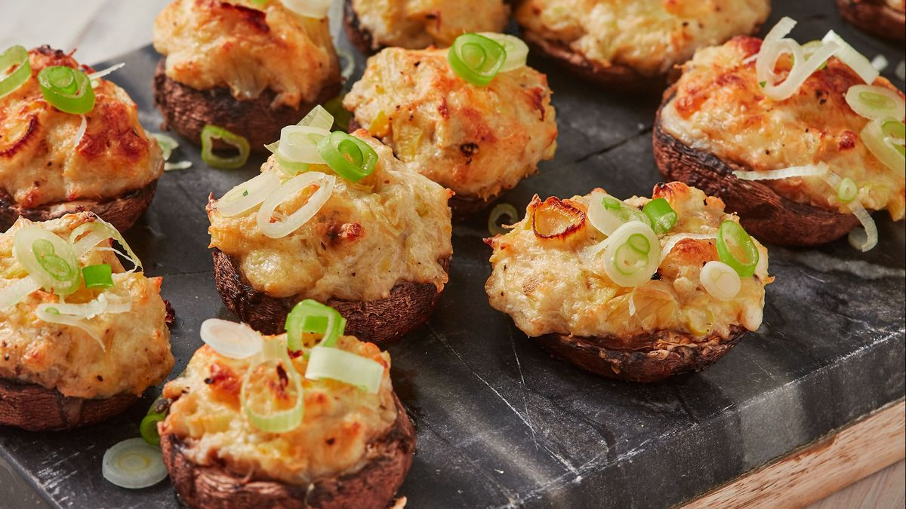

These little goodies are the perfect addition to your next holiday gathering or even the perfect appetizer to serve before a cozy dinner at home.
Everyone will be dazzled by every delicious bite (they won't be able to keep their hands off of them!)You can smile while you think of how easy they were to toss together! And the best part - I usually end up with leftover stuffing, which freezes beautifully until the next carry-in!
